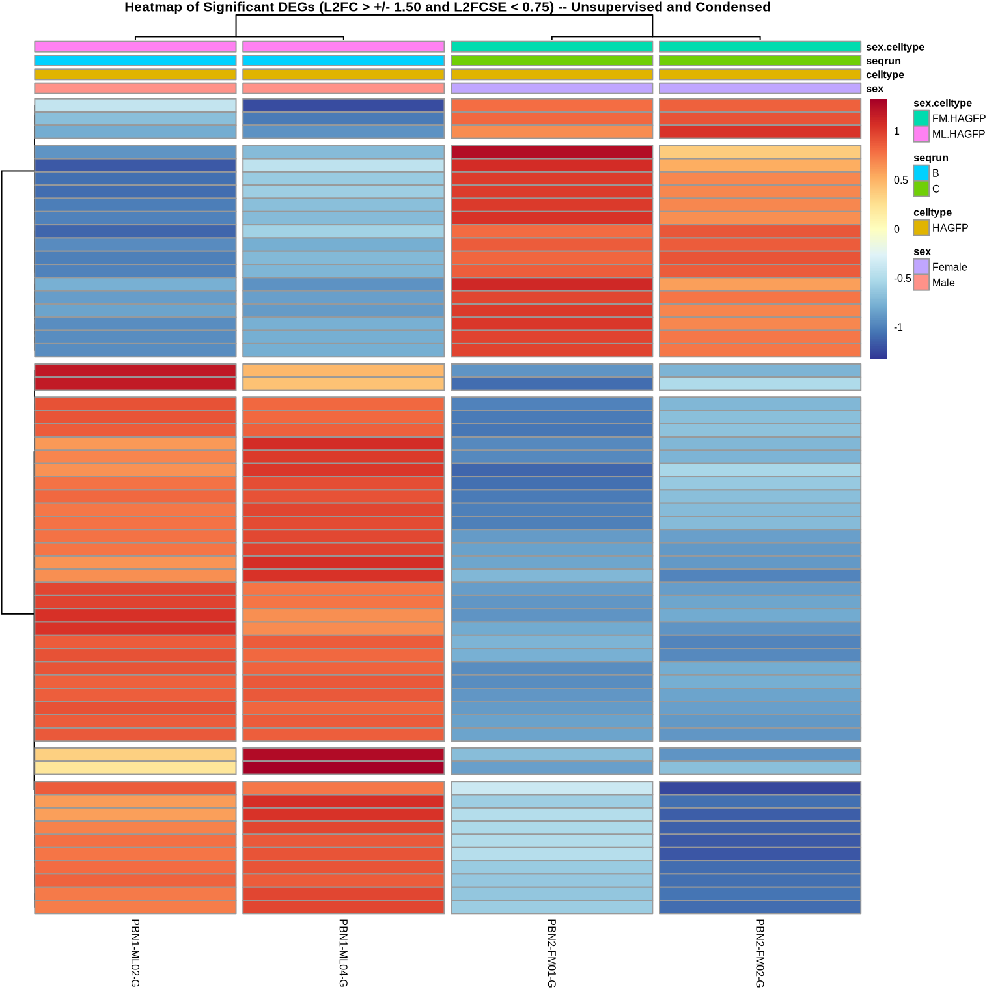
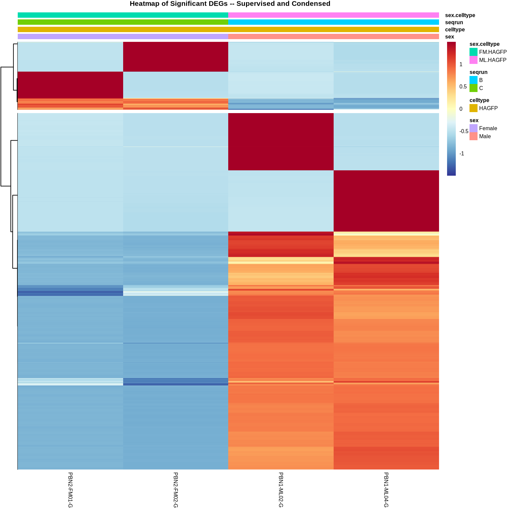
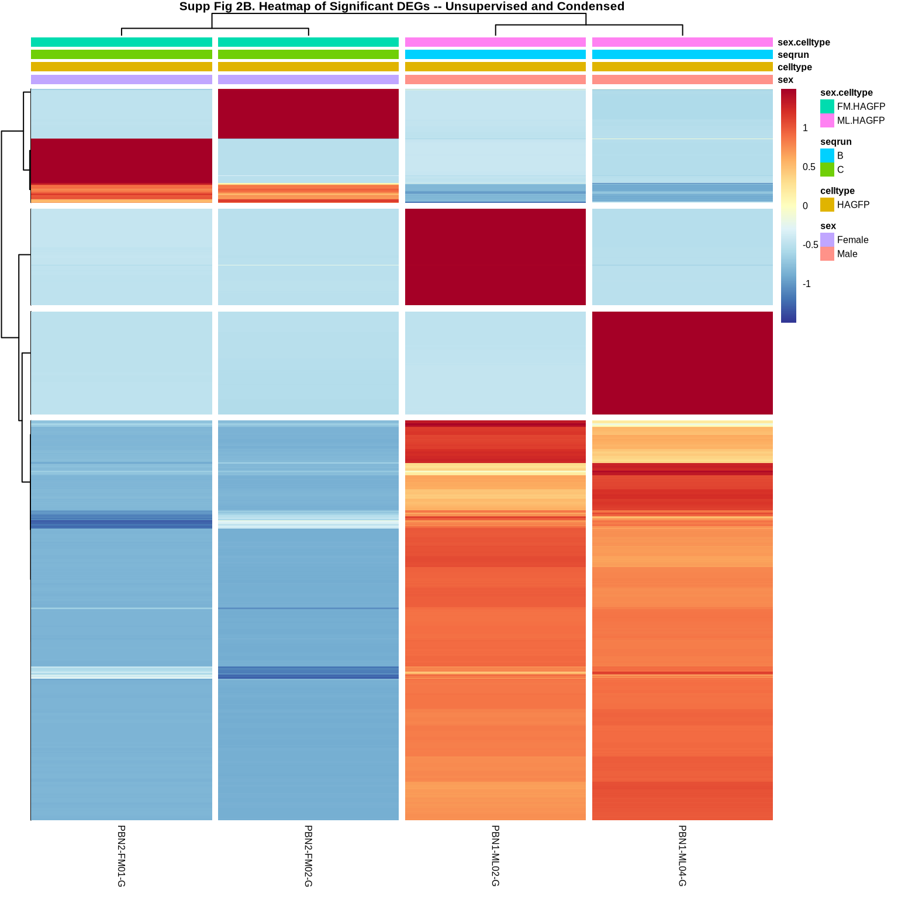
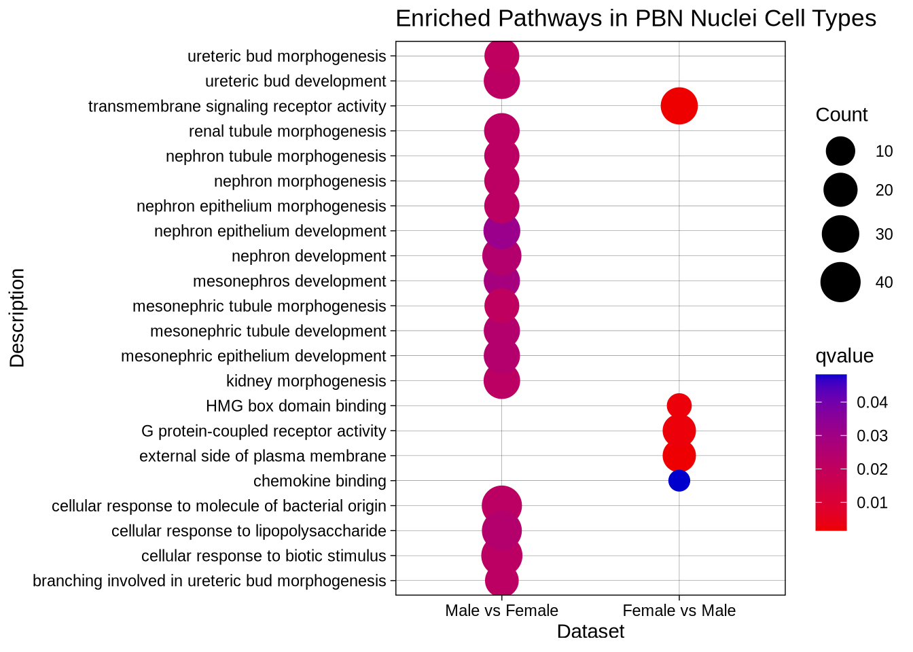
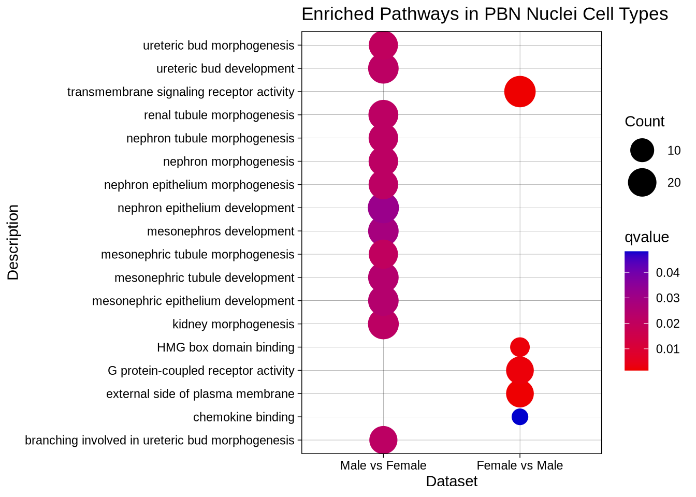
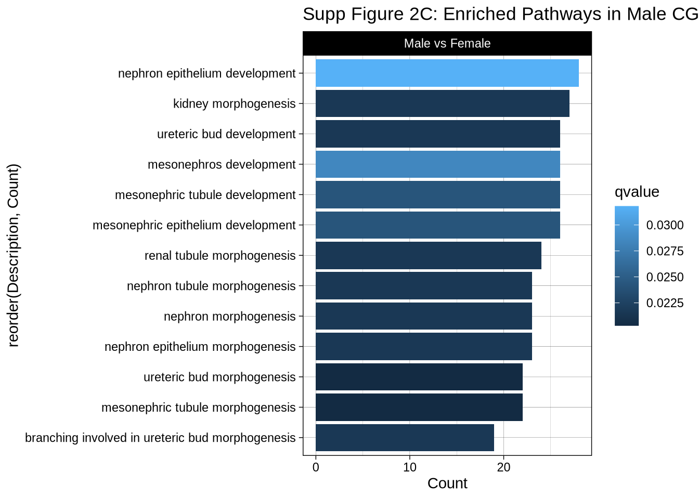
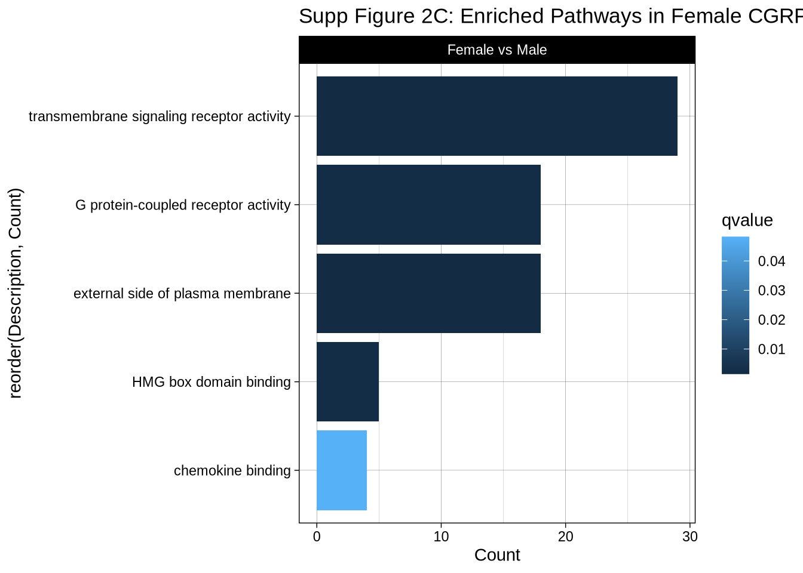

PBN RNAseq DeSeq2 RNA-Sequencing Analysis – By Sex
Last updated: 2026-03-05
Checks: 6 1
Knit directory: CGRPReinforcement/
This reproducible R Markdown analysis was created with workflowr (version 1.7.2). The Checks tab describes the reproducibility checks that were applied when the results were created. The Past versions tab lists the development history.
Great! Since the R Markdown file has been committed to the Git repository, you know the exact version of the code that produced these results.
Great job! The global environment was empty. Objects defined in the global environment can affect the analysis in your R Markdown file in unknown ways. For reproduciblity it’s best to always run the code in an empty environment.
The command set.seed(20260305) was run prior to running
the code in the R Markdown file. Setting a seed ensures that any results
that rely on randomness, e.g. subsampling or permutations, are
reproducible.
Great job! Recording the operating system, R version, and package versions is critical for reproducibility.
Nice! There were no cached chunks for this analysis, so you can be confident that you successfully produced the results during this run.
Using absolute paths to the files within your workflowr project makes it difficult for you and others to run your code on a different machine. Change the absolute path(s) below to the suggested relative path(s) to make your code more reproducible.
| absolute | relative |
|---|---|
| ~/Documents/GitHubRepos/CGRPReinforcement/ | . |
Great! You are using Git for version control. Tracking code development and connecting the code version to the results is critical for reproducibility.
The results in this page were generated with repository version 3fbf1eb. See the Past versions tab to see a history of the changes made to the R Markdown and HTML files.
Note that you need to be careful to ensure that all relevant files for
the analysis have been committed to Git prior to generating the results
(you can use wflow_publish or
wflow_git_commit). workflowr only checks the R Markdown
file, but you know if there are other scripts or data files that it
depends on. Below is the status of the Git repository when the results
were generated:
Ignored files:
Ignored: .Rproj.user/
Untracked files:
Untracked: data/gene_count_matrix_LT19_PBN2_LT15_Merged.csv
Untracked: data/sample_info_ComparativeAnalysis_CombineCellType.csv
Untracked: data/sample_info_PBN_CGRP.csv
Untracked: data/sample_info_PBN_DG_Exclusions.csv
Untracked: output/CGRPEnrichedGeneSet.csv
Untracked: output/FIgure1B_PCA_byHATag.pdf
Untracked: output/Figure1B_PBNRNAseq_PCA_byHATag.pdf
Untracked: output/Figure1C_Heatmap.pdf
Untracked: output/Figure1D_VolcanoPlot.pdf
Untracked: output/Figure1E_GOHA.pdf
Untracked: output/Figure1F_GOHA.pdf
Untracked: output/Figure2A_PCA_byCellTypeSpecific.pdf
Untracked: output/Figure2B_Heatmap_Unsupervised_Condensed.pdf
Untracked: output/Figure2C_GOCGRP_CellTypes.pdf
Untracked: output/PBNRNASeq_CellType_GODetails.csv
Untracked: output/SFig2D_GO_SexSpecific.pdf
Untracked: output/SFig2E_GO_SexSpecific.pdf
Untracked: output/SFigure2A_PCA_bySex.pdf
Untracked: output/SFigure2B_Heatmap_Unsupervised_Condensed.pdf
Untracked: output/SigDEGs_PBNRNAseq_byCellType_CGRPvsnonCGRP.csv
Untracked: output/SigDEGs_PBNRNAseq_byCellType_ExcitatoryvsCGRP.csv
Untracked: output/SigDEGs_PBNRNAseq_byCellType_PBNvsCGRP.csv
Untracked: output/SigDEGs_PBNRNAseq_byCellType_PVvsCGRP.csv
Untracked: output/SigDEGs_PBNRNAseq_byCellType_VIPvsCGRP.csv
Untracked: output/SigDEGs_PBNRNAseq_byCellType_mDAvsCGRP.csv
Untracked: output/SigDEGs_PBNRNAseq_byHATag.csv
Untracked: output/SigDEGs_PBNRNAseq_bySex.csv
Untracked: renv.lock
Untracked: renv/
Unstaged changes:
Modified: .Rprofile
Modified: CGRPReinforcement.Rproj
Modified: README.md
Modified: analysis/_site.yml
Note that any generated files, e.g. HTML, png, CSS, etc., are not included in this status report because it is ok for generated content to have uncommitted changes.
These are the previous versions of the repository in which changes were
made to the R Markdown (analysis/index3.Rmd) and HTML
(docs/index3.html) files. If you’ve configured a remote Git
repository (see ?wflow_git_remote), click on the hyperlinks
in the table below to view the files as they were in that past version.
| File | Version | Author | Date | Message |
|---|---|---|---|---|
| Rmd | 3fbf1eb | avm27 | 2026-03-05 | Publish supplementary analyses |
1 DESeq2 Analysis
DESeq2 is called our post-processing ## Setup and Analysis ###Building DESeq2 input files from gene count matrices output by String Tie.
###Running DeSeq2 analysis with factor levels of Sex

1.1 Plot Estimates and Gather Results
These results include overview for each result file and dispersion estimates based on count values
1.1.1 Dispersion Estimates Male vs Female based on count values
| baseMean | log2FoldChange | lfcSE | stat | pvalue | padj | |
|---|---|---|---|---|---|---|
| Mrpl15|Mrpl15 | 2594.56084 | -0.8822184 | 1.158788 | -0.7613289 | 0.4464606 | 0.8282371 |
| Xkr4|Xkr4 | 4142.27356 | -0.5554987 | 1.387592 | -0.4003328 | 0.6889114 | 0.9565360 |
| Gm39585|Gm39585 | 4629.85053 | 0.0779191 | 1.273748 | 0.0611731 | 0.9512213 | 0.9953081 |
| Lypla1|Lypla1 | 344.21524 | 8.3085625 | 2.342904 | 3.5462666 | 0.0003907 | 0.0027594 |
| Gm39587|Gm39587 | 15.29417 | -7.4329285 | 4.788106 | -1.5523735 | 0.1205729 | 0.3459054 |
| Tcea1|Tcea1 | 2114.19399 | -0.4797092 | 1.185218 | -0.4047433 | 0.6856662 | 0.9561913 |
| Rgs20|Rgs20 | 528.75426 | -2.6806331 | 4.021172 | -0.6666299 | 0.5050086 | 0.8733440 |
| Npbwr1|Npbwr1 | 223.18919 | 24.0328680 | 4.784983 | 5.0225609 | 0.0000005 | 0.0000117 |
| Oprk1|Oprk1 | 3851.97457 | -2.2609229 | 1.172976 | -1.9275105 | 0.0539160 | 0.2273601 |
| Atp6v1h|Atp6v1h | 11939.74461 | -0.7726858 | 1.139111 | -0.6783236 | 0.4975665 | 0.8682639 |
| Rb1cc1|Rb1cc1 | 10509.93492 | -0.2458336 | 1.096540 | -0.2241902 | 0.8226093 | 0.9785956 |
| 4732440D04Rik|4732440D04Rik | 3174.37104 | 0.2404387 | 1.179166 | 0.2039058 | 0.8384271 | 0.9804075 |
| Gm26901|Gm26901 | 206.47389 | 1.0927276 | 4.459863 | 0.2450137 | 0.8064458 | 0.9765120 |
| St18|St18 | 299.20686 | 5.1173676 | 2.867771 | 1.7844406 | 0.0743521 | 0.2611709 |
| Pcmtd1|Pcmtd1 | 5333.11591 | 0.0619351 | 1.091540 | 0.0567410 | 0.9547515 | 0.9957376 |
| Rrs1|Rrs1 | 714.82020 | -2.7344061 | 3.929187 | -0.6959215 | 0.4864780 | 0.8597060 |
| Adhfe1|Adhfe1 | 86.94688 | -5.4207586 | 4.591687 | -1.1805593 | 0.2377779 | 0.5704719 |
| 3110035E14Rik|3110035E14Rik | 31.53375 | 0.5424424 | 4.569364 | 0.1187129 | 0.9055028 | 0.9905408 |
| Sntg1|Sntg1 | 2256.87584 | -0.2054899 | 1.392018 | -0.1476201 | 0.8826426 | 0.9891279 |
| Mybl1|Mybl1 | 1024.41207 | -1.0176845 | 2.923438 | -0.3481123 | 0.7277559 | 0.9648555 |
out of 16384 with nonzero total read count adjusted p-value < 0.1 LFC > 0 (up) : 2632, 16% LFC < 0 (down) : 493, 3% outliers [1] : 0, 0% low counts [2] : 0, 0% (mean count < 9) [1] see ‘cooksCutoff’ argument of ?results [2] see ‘independentFiltering’ argument of ?results
1.2 Significant DEGs By Comparison
This subsection is for annotation the results files to include all necessary information for downstream analyses. This is due to the use of StringTie to generate count matrices with the specific mm10 annotation files that we use. Other methods will probably not require this, but our gene names are split by the “|” delimiter and must be separated in order to accurately generate the required Gene Symbols for mapping to entrez, ensemble and descriptions from Org.mm.eg.db.
After annotation we subset the results to only view the significantly differentially expressed genes with an adjusted p-value > 0.05.
results_sig1 <- subset(res1, padj < 0.05)
kable((head(results_sig1, 20)), caption = "Significant DEGs Male vs Female", format = "html", align = "l", booktabs = TRUE) %>%
kable_styling(html_font = "Arial", font_size = 10, bootstrap_options = c("striped", "hover", "condensed", "responsive")) %>%
scroll_box(width = "1000px", height = "500px")| baseMean | log2FoldChange | lfcSE | stat | pvalue | padj | symbol | description | entrez | ensembl | |
|---|---|---|---|---|---|---|---|---|---|---|
| Lypla1|Lypla1 | 344.21524 | 8.308563 | 2.342904 | 3.546267 | 0.0003907 | 0.0027594 | Lypla1 | lysophospholipase 1 | 18777 | ENSMUSG0…. |
| Npbwr1|Npbwr1 | 223.18919 | 24.032868 | 4.784983 | 5.022561 | 0.0000005 | 0.0000117 | Npbwr1 | neuropeptides B/W receptor 1 | 226304 | ENSMUSG0…. |
| Cpa6|Cpa6 | 154.78569 | 23.526707 | 4.785092 | 4.916668 | 0.0000009 | 0.0000151 | Cpa6 | carboxypeptidase A6 | 329093 | ENSMUSG0…. |
| Gm30898|Gm30898 | 179.43219 | 11.034557 | 3.174950 | 3.475506 | 0.0005099 | 0.0035444 | Gm30898 | predicted gene, 30898 | 102632954 | NA |
| Sulf1|Sulf1 | 436.39612 | 12.316934 | 2.797531 | 4.402787 | 0.0000107 | 0.0000979 | Sulf1 | sulfatase 1 | 240725 | ENSMUSG0…. |
| Lactb2|Lactb2 | 393.44442 | 12.167148 | 2.988152 | 4.071797 | 0.0000467 | 0.0003837 | Lactb2 | lactamase, beta 2 | 212442 | ENSMUSG0…. |
| Sbspon|Sbspon | 235.73077 | 11.428343 | 2.963135 | 3.856841 | 0.0001149 | 0.0008890 | Sbspon | somatomedin B and thrombospondin, type 1 domain containing | 226866 | ENSMUSG0…. |
| Rdh10|Rdh10 | 129.50333 | 10.563879 | 3.602388 | 2.932466 | 0.0033628 | 0.0204820 | Rdh10 | retinol dehydrogenase 10 (all-trans) | 98711 | ENSMUSG0…. |
| Pi15|Pi15 | 115.59202 | 23.118089 | 4.785213 | 4.831152 | 0.0000014 | 0.0000186 | Pi15 | peptidase inhibitor 15 | 94227 | ENSMUSG0…. |
| Tfap2d|Tfap2d | 81.19816 | -23.331718 | 4.785379 | -4.875626 | 0.0000011 | 0.0000164 | Tfap2d | transcription factor AP-2, delta | 226896 | ENSMUSG0…. |
| Crispld1|Crispld1 | 785.29810 | -13.115964 | 2.570012 | -5.103463 | 0.0000003 | 0.0000094 | Crispld1 | cysteine-rich secretory protein LCCL domain containing 1 | 83691 | ENSMUSG0…. |
| 6720483E21Rik|6720483E21Rik | 230.73796 | 11.397524 | 3.021300 | 3.772390 | 0.0001617 | 0.0012163 | 6720483E21Rik | RIKEN cDNA 6720483E21 gene | 77741 | ENSMUSG0…. |
| Gsta3|Gsta3 | 154.92284 | 10.822416 | 3.556736 | 3.042795 | 0.0023439 | 0.0146632 | Gsta3 | glutathione S-transferase, alpha 3 | 14859 | ENSMUSG0…. |
| Kcnq5|Kcnq5 | 252.64807 | 11.528447 | 3.058465 | 3.769357 | 0.0001637 | 0.0012301 | Kcnq5 | potassium voltage-gated channel, subfamily Q, member 5 | 226922 | ENSMUSG0…. |
| Col19a1|Col19a1 | 653.38426 | 12.899192 | 2.824932 | 4.566196 | 0.0000050 | 0.0000482 | Col19a1 | collagen, type XIX, alpha 1 | 12823 | ENSMUSG0…. |
| Neurl3|Neurl3 | 232.18338 | 24.091527 | 4.784973 | 5.034830 | 0.0000005 | 0.0000115 | Neurl3 | neuralized E3 ubiquitin protein ligase 3 | 214854 | ENSMUSG0…. |
| LOC108167617|LOC108167617 | 215.58652 | -11.250951 | 3.065674 | -3.669976 | 0.0002426 | 0.0017679 | LOC108167617 | NA | NA | |
| Ankrd39|Ankrd39 | 152.18279 | 23.503110 | 4.785098 | 4.911730 | 0.0000009 | 0.0000151 | Ankrd39 | ankyrin repeat domain 39 | 109346 | ENSMUSG0…. |
| Sema4c|Sema4c | 110.23821 | 10.331521 | 3.740892 | 2.761780 | 0.0057487 | 0.0335783 | Sema4c | sema domain, immunoglobulin domain (Ig), transmembrane domain (TM) and short cytoplasmic domain, (semaphorin) 4C | 20353 | ENSMUSG0…. |
| Gm33533|Gm33533 | 228.63408 | 11.384298 | 3.016416 | 3.774114 | 0.0001606 | 0.0012085 | Gm33533 | predicted gene, 33533 | 102636476 | ENSMUSG0…. |
1.3 Visualizing Differentially Expressed Genes
1.3.1 Principal Components Analysis
For visualization I am converting all analyses to logarithmic. Following this I have completed a PCA based on the top 500 genes.
#rlog transformation of dds for visualization
ddsMat_rlog <- rlog(dds, blind = FALSE)
# Plot PCA by column variable (dds)
pcaData2 <- plotPCA(ddsMat_rlog, intgroup = "sex", returnData = TRUE)
pcaData2$sex <- factor(pcaData2$sex, levels = c("Male", "Female"))
percentVar2 <- round(100 * attr(pcaData2, "percentVar"))
## you only need the following line but the rest is additional formatting
pca <- ggplot(pcaData2, aes(PC1, PC2, color=sex, label = colnames(dds))) +
theme_bw() + # remove default ggplot2 theme
geom_point(size = 2) + # Increase point size
scale_y_continuous(limits = c(-125, 125)) +# change limits to fix figure dimensions
scale_x_continuous(limits = c(-125, 125)) +# change limits to fix figure dimensions
xlab(paste0("PC1: ",percentVar2[1],"% variance")) +
ylab(paste0("PC2: ",percentVar2[2],"% variance")) +
ggrepel::geom_label_repel(box.padding = 0.5, max.overlaps = Inf) +
coord_fixed() +
#scale_color_manual(values = custom_colors) + # Set custom colors
ggtitle(label = "Supp Figure 2A. Principal Component Analysis (PCA)",
subtitle = "Top 500 Variable Genes (rlog transformed)")
pca
1.3.2 Heatmaps of Significantly Differentially Expressed Genes
To generate the heatmaps we use two methods, the first utilizes all differential expressed genes based on a specified cut-off. In our case we select for any significant DEGs with a L2FC > 1.5 or an L2FC < -1.5 with a L2FC Standard Error < 0.75. We then plot these using a wards D correlation clustering method and generate both supervised and unsupervised clusters (by group). Rows are scaled based on a correlation z-score. The second method is less stringent and utilizes all significant DEGs, without filtering.
1.3.2.1 Highly Significiant
Cut-Off of L2FC > 1.5 or an L2FC < -1.5 with a L2FC Standard Error < 0.75
1.3.2.1.1 Supervised and Condensed Highly Significant DEGs (L2FC > +/- 1 and L2FCSE < 1.5).

1.3.2.1.2 Unsupervised and Condensed Highly Significant DEGs (L2FC > +/- 1 and L2FCSE < 1.5)

1.3.2.2 All DEGs
1.3.2.2.1 Supervised and Condensed All DEGs

1.3.2.2.2 Unsupervised and Condensed All DEGs

2 Gene Ontology Analysis
To generate GO analysis we first created a background of genes using any genes that met the original DESEQ2 filtering criteria of > 50 genes counts per row and having a mappable Entrez ID. This generates the necessary background to ensure that we are not just detecting background functional pathways as we are utilizing this specific cell type. We then filter our genes that have L2FC < 0 or L2FC > 0 to determine directionality of the affected GO pathways. GO enrich is then used to conduct the pathway analysis utilizing the Entrez IDs as inputs and an “FDR” multiple testing correction.
2.0.1 Pull only the Enriched samples from either side (<-1 or >1 LFC)
# Generate Background for KEGG/GO
background_mm10 <- subset(res1, is.na(entrez) == FALSE)
gene_matrix_background <- unique(sort(background_mm10$entrez))
# Remove any genes that do not have any entrez identifiers
results_sig_entrez <- subset(results_sig1, is.na(entrez) == FALSE)
# Create a matrix of gene log2 fold changes
gene_matrix <- results_sig_entrez$log2FoldChange
# Add the entrezID's as names for each logFC entry
names(gene_matrix) <- results_sig_entrez$entrez
# Pull only the Enriched samples from either side +/- 1 LFC
gene_matrix_enrich <- gene_matrix[which(gene_matrix > 1)]
gene_matrix_enrich2 <- gene_matrix[which(gene_matrix < -1)]
go_enrich1 <- clusterProfiler::enrichGO(gene = names(gene_matrix_enrich),
OrgDb = 'org.Mm.eg.db',
readable = T,
universe = gene_matrix_background,
ont = "ALL",
pAdjustMethod = "fdr",
pvalueCutoff = 0.05,
qvalueCutoff = 0.05)
go_enrich2 <- clusterProfiler::enrichGO(gene = names(gene_matrix_enrich2),
OrgDb = 'org.Mm.eg.db',
readable = T,
universe = gene_matrix_background,
ont = "ALL",
pAdjustMethod = "fdr",
pvalueCutoff = 0.05,
qvalueCutoff = 0.05)
KEGG_enrich1 <- clusterProfiler::enrichKEGG(gene = names(gene_matrix_enrich),
organism = 'mmu',
keyType = "ncbi-geneid",
pvalueCutoff = 0.01,
pAdjustMethod = "fdr",
universe = gene_matrix_background,
qvalueCutoff = 0.05)Reading KEGG annotation online: "https://rest.kegg.jp/link/mmu/pathway"...Reading KEGG annotation online: "https://rest.kegg.jp/list/pathway/mmu"...Reading KEGG annotation online: "https://rest.kegg.jp/conv/ncbi-geneid/mmu"...KEGG_enrich2 <- clusterProfiler::enrichKEGG(gene = names(gene_matrix_enrich2),
organism = 'mmu',
keyType = "ncbi-geneid",
pvalueCutoff = 0.01,
pAdjustMethod = "fdr",
universe = gene_matrix_background,
qvalueCutoff = 0.05)
go_enrich_dataset1 <- as.data.frame(go_enrich1)
go_enrich_dataset2 <- as.data.frame(go_enrich2)
KEGG_enrich_dataset1 <- as.data.frame(KEGG_enrich1)
KEGG_enrich_dataset2 <- as.data.frame(KEGG_enrich2)
go_enrich_dataset1$Dataset <- "Male vs Female"
go_enrich_dataset2$Dataset <- "Female vs Male"
go_enrich_dataset1$Celltype <- "Male"
go_enrich_dataset2$Celltype <- "Female"
go_enrich_dataset1$Comparison <- "Female"
go_enrich_dataset2$Comparison <- "Male"
MergedGO1 <- merge(go_enrich_dataset1, go_enrich_dataset2, all=TRUE)
# Turn your 'Dataset' column into a character vector
MergedGO1$Dataset <- as.character(MergedGO1$Dataset)
# Then turn it back into a factor with the levels in the correct order
MergedGO1$Dataset <- factor(MergedGO1$Dataset, levels = c("Male vs Female", "Female vs Male"))
MergedGO1$Description_title_case <- stringr::str_to_title(MergedGO1$Description)
MergedGO1$GOPathways <- stringr::str_to_title(MergedGO1$Description_title_case)
MergedGO1$GOPathways <- stringr::str_wrap(MergedGO1$GOPathways, width = 10)
S1 <- ggplot(MergedGO1, aes(x = Dataset, y = Description, size = Count, color = qvalue, group = Dataset)) +
geom_point(alpha = 1) +
theme_linedraw() + # change legend key width
scale_x_discrete(labels = function(x) stringr::str_wrap(x, width = 15)) +
scale_y_discrete(labels = function(x) stringr::str_wrap(x, width = 50)) +
ggtitle("Enriched Pathways in PBN Nuclei Cell Types")
#facet_grid(~Region+Comparison2, scales = "free_x")
S2 <- S1 + scale_color_gradient(low = "red2", high = "mediumblue", space = "Lab") + scale_size(range = c(5, 10))
S2
### Set the Fold Enrichment for most important pathwaysgo_filtered1 <- go_enrich_dataset1 %>%
filter(FoldEnrichment >= 2)
go_filtered2 <- go_enrich_dataset2 %>%
filter(FoldEnrichment >= 2)
go_filtered1$Dataset <- "Male vs Female"
go_filtered2$Dataset <- "Female vs Male"
go_filtered1$Celltype <- "Male"
go_filtered2$Celltype <- "Female"
go_filtered1$Comparison <- "Female"
go_filtered2$Comparison <- "Male"2.0.1.1 Combined Filtered
MergedGO1_filtered <- merge(go_filtered1, go_filtered2, all=TRUE)
# Turn your 'Dataset' column into a character vector
MergedGO1_filtered$Dataset <- as.character(MergedGO1_filtered$Dataset)
# Then turn it back into a factor with the levels in the correct order
MergedGO1_filtered$Dataset <- factor(MergedGO1_filtered$Dataset, levels = c("Male vs Female", "Female vs Male"))
MergedGO1_filtered$Description_title_case <- stringr::str_to_title(MergedGO1_filtered$Description)
MergedGO1_filtered$GOPathways <- stringr::str_to_title(MergedGO1_filtered$Description_title_case)
MergedGO1_filtered$GOPathways <- stringr::str_wrap(MergedGO1_filtered$GOPathways, width = 10)
S1 <- ggplot(MergedGO1_filtered, aes(x = Dataset, y = Description, size = Count, color = qvalue, group = Dataset)) +
geom_point(alpha = 1) +
theme_linedraw() + # change legend key width
scale_x_discrete(labels = function(x) stringr::str_wrap(x, width = 15)) +
scale_y_discrete(labels = function(x) stringr::str_wrap(x, width = 50)) +
ggtitle("Enriched Pathways in PBN Nuclei Cell Types")
#facet_grid(~Region+Comparison2, scales = "free_x")
S2 <- S1 + scale_color_gradient(low = "red2", high = "mediumblue", space = "Lab") + scale_size(range = c(5, 10))
S2
2.0.1.2 Male Only
GO1_filtered <- go_filtered1
# Turn your 'Dataset' column into a character vector
GO1_filtered$Dataset <- as.character(GO1_filtered$Dataset)
# Then turn it back into a factor with the levels in the correct order
GO1_filtered$Dataset <- factor(GO1_filtered$Dataset, levels = c("Male vs Female"))
GO1_filtered$Description_title_case <- stringr::str_to_title(GO1_filtered$Description)
GO1_filtered$GOPathways <- stringr::str_to_title(GO1_filtered$Description_title_case)
GO1_filtered$GOPathways <- stringr::str_wrap(GO1_filtered$GOPathways, width = 10)
S1 <- ggplot(GO1_filtered, aes(x = Count, y = reorder(Description, Count), fill = qvalue)) +
geom_col(alpha = 1) +
facet_wrap(~Dataset, scales = "free_y") +
theme_linedraw() + # change legend key width
scale_y_discrete(labels = function(x) stringr::str_wrap(x, width = 50)) +
ggtitle("Supp Figure 2C: Enriched Pathways in Male CGRPPBN Neurons")
S2 <- S1 + scale_color_gradient(low = "red2", high = "mediumblue", space = "Lab") + scale_size(range = c(5, 10))
S2
png
2 2.0.1.3 Female Only
GO2_filtered <- go_filtered2
# Turn your 'Dataset' column into a character vector
GO2_filtered$Dataset <- as.character(GO2_filtered$Dataset)
# Then turn it back into a factor with the levels in the correct order
GO2_filtered$Dataset <- factor(GO2_filtered$Dataset, levels = c("Female vs Male"))
GO2_filtered$Description_title_case <- stringr::str_to_title(GO2_filtered$Description)
GO2_filtered$GOPathways <- stringr::str_to_title(GO2_filtered$Description_title_case)
GO2_filtered$GOPathways <- stringr::str_wrap(GO2_filtered$GOPathways, width = 10)
S1 <- ggplot(GO2_filtered, aes(x = Count, y = reorder(Description, Count), fill = qvalue)) +
geom_col(alpha = 1) +
facet_wrap(~Dataset, scales = "free_y") +
theme_linedraw() + # change legend key width
scale_y_discrete(labels = function(x) stringr::str_wrap(x, width = 50)) +
ggtitle("Supp Figure 2C: Enriched Pathways in Female CGRPPBN Neurons")
S2 <- S1 + scale_color_gradient(low = "red2", high = "mediumblue", space = "Lab") + scale_size(range = c(5, 10))
S2
R version 4.5.2 (2025-10-31)
Platform: x86_64-conda-linux-gnu
Running under: Ubuntu 22.04.5 LTS
Matrix products: default
BLAS/LAPACK: /home/avm27/anaconda3/envs/workflowr_env/lib/libopenblasp-r0.3.30.so; LAPACK version 3.12.0
locale:
[1] LC_CTYPE=en_US.UTF-8 LC_NUMERIC=C
[3] LC_TIME=en_US.UTF-8 LC_COLLATE=en_US.UTF-8
[5] LC_MONETARY=en_US.UTF-8 LC_MESSAGES=en_US.UTF-8
[7] LC_PAPER=en_US.UTF-8 LC_NAME=C
[9] LC_ADDRESS=C LC_TELEPHONE=C
[11] LC_MEASUREMENT=en_US.UTF-8 LC_IDENTIFICATION=C
time zone: America/New_York
tzcode source: system (glibc)
attached base packages:
[1] stats4 stats graphics grDevices datasets utils methods
[8] base
other attached packages:
[1] DOSE_4.2.0 vidger_1.28.0
[3] org.Mm.eg.db_3.21.0 AnnotationDbi_1.70.0
[5] clusterProfiler_4.16.0 DESeq2_1.48.2
[7] SummarizedExperiment_1.38.1 Biobase_2.68.0
[9] MatrixGenerics_1.20.0 matrixStats_1.5.0
[11] GenomicRanges_1.60.0 GenomeInfoDb_1.44.3
[13] IRanges_2.42.0 S4Vectors_0.46.0
[15] BiocGenerics_0.54.1 generics_0.1.4
[17] knitr_1.51 RColorBrewer_1.1-3
[19] pheatmap_1.0.13 kableExtra_1.4.0
[21] plotly_4.12.0 ggrepel_0.9.7
[23] gridExtra_2.3 reshape2_1.4.5
[25] lubridate_1.9.5 forcats_1.0.1
[27] stringr_1.6.0 dplyr_1.2.0
[29] purrr_1.2.1 readr_2.2.0
[31] tidyr_1.3.2 tibble_3.3.1
[33] ggplot2_4.0.2 tidyverse_2.0.0
[35] workflowr_1.7.2
loaded via a namespace (and not attached):
[1] rstudioapi_0.18.0 jsonlite_2.0.0 magrittr_2.0.4
[4] ggtangle_0.1.1 farver_2.1.2 rmarkdown_2.30
[7] fs_1.6.6 vctrs_0.7.1 memoise_2.0.1
[10] ggtree_3.16.3 htmltools_0.5.9 S4Arrays_1.8.1
[13] gridGraphics_0.5-1 SparseArray_1.8.1 sass_0.4.10
[16] bslib_0.10.0 htmlwidgets_1.6.4 plyr_1.8.9
[19] cachem_1.1.0 igraph_2.2.2 whisker_0.4.1
[22] lifecycle_1.0.5 pkgconfig_2.0.3 gson_0.1.0
[25] Matrix_1.7-4 R6_2.6.1 fastmap_1.2.0
[28] GenomeInfoDbData_1.2.14 digest_0.6.39 aplot_0.2.9
[31] enrichplot_1.28.4 GGally_2.4.0 patchwork_1.3.2
[34] ps_1.9.1 rprojroot_2.1.1 textshaping_1.0.4
[37] RSQLite_2.4.6 labeling_0.4.3 timechange_0.4.0
[40] httr_1.4.8 abind_1.4-8 compiler_4.5.2
[43] bit64_4.6.0-1 withr_3.0.2 S7_0.2.1
[46] BiocParallel_1.42.2 DBI_1.3.0 ggstats_0.12.0
[49] R.utils_2.13.0 rappdirs_0.3.4 DelayedArray_0.34.1
[52] tools_4.5.2 otel_0.2.0 ape_5.8-1
[55] httpuv_1.6.16 R.oo_1.27.1 glue_1.8.0
[58] callr_3.7.6 nlme_3.1-168 GOSemSim_2.34.0
[61] promises_1.5.0 grid_4.5.2 getPass_0.2-4
[64] fgsea_1.34.2 gtable_0.3.6 tzdb_0.5.0
[67] R.methodsS3_1.8.2 data.table_1.18.2.1 hms_1.1.4
[70] xml2_1.5.2 XVector_0.48.0 pillar_1.11.1
[73] limma_3.64.3 yulab.utils_0.2.4 later_1.4.8
[76] splines_4.5.2 treeio_1.32.0 lattice_0.22-9
[79] renv_1.1.7 bit_4.6.0 tidyselect_1.2.1
[82] GO.db_3.21.0 locfit_1.5-9.12 Biostrings_2.76.0
[85] git2r_0.35.0 edgeR_4.6.3 svglite_2.2.2
[88] xfun_0.56 statmod_1.5.1 stringi_1.8.7
[91] UCSC.utils_1.4.0 ggfun_0.2.0 lazyeval_0.2.2
[94] yaml_2.3.12 evaluate_1.0.5 codetools_0.2-20
[97] qvalue_2.40.0 BiocManager_1.30.27 ggplotify_0.1.3
[100] cli_3.6.5 systemfonts_1.3.1 processx_3.8.6
[103] jquerylib_0.1.4 Rcpp_1.1.1 png_0.1-8
[106] parallel_4.5.2 blob_1.3.0 tidytree_0.4.7
[109] viridisLite_0.4.3 scales_1.4.0 crayon_1.5.3
[112] rlang_1.1.7 cowplot_1.2.0 fastmatch_1.1-8
[115] KEGGREST_1.48.1
R version 4.5.2 (2025-10-31)
Platform: x86_64-conda-linux-gnu
Running under: Ubuntu 22.04.5 LTS
Matrix products: default
BLAS/LAPACK: /home/avm27/anaconda3/envs/workflowr_env/lib/libopenblasp-r0.3.30.so; LAPACK version 3.12.0
locale:
[1] LC_CTYPE=en_US.UTF-8 LC_NUMERIC=C
[3] LC_TIME=en_US.UTF-8 LC_COLLATE=en_US.UTF-8
[5] LC_MONETARY=en_US.UTF-8 LC_MESSAGES=en_US.UTF-8
[7] LC_PAPER=en_US.UTF-8 LC_NAME=C
[9] LC_ADDRESS=C LC_TELEPHONE=C
[11] LC_MEASUREMENT=en_US.UTF-8 LC_IDENTIFICATION=C
time zone: America/New_York
tzcode source: system (glibc)
attached base packages:
[1] stats4 stats graphics grDevices datasets utils methods
[8] base
other attached packages:
[1] DOSE_4.2.0 vidger_1.28.0
[3] org.Mm.eg.db_3.21.0 AnnotationDbi_1.70.0
[5] clusterProfiler_4.16.0 DESeq2_1.48.2
[7] SummarizedExperiment_1.38.1 Biobase_2.68.0
[9] MatrixGenerics_1.20.0 matrixStats_1.5.0
[11] GenomicRanges_1.60.0 GenomeInfoDb_1.44.3
[13] IRanges_2.42.0 S4Vectors_0.46.0
[15] BiocGenerics_0.54.1 generics_0.1.4
[17] knitr_1.51 RColorBrewer_1.1-3
[19] pheatmap_1.0.13 kableExtra_1.4.0
[21] plotly_4.12.0 ggrepel_0.9.7
[23] gridExtra_2.3 reshape2_1.4.5
[25] lubridate_1.9.5 forcats_1.0.1
[27] stringr_1.6.0 dplyr_1.2.0
[29] purrr_1.2.1 readr_2.2.0
[31] tidyr_1.3.2 tibble_3.3.1
[33] ggplot2_4.0.2 tidyverse_2.0.0
[35] workflowr_1.7.2
loaded via a namespace (and not attached):
[1] rstudioapi_0.18.0 jsonlite_2.0.0 magrittr_2.0.4
[4] ggtangle_0.1.1 farver_2.1.2 rmarkdown_2.30
[7] fs_1.6.6 vctrs_0.7.1 memoise_2.0.1
[10] ggtree_3.16.3 htmltools_0.5.9 S4Arrays_1.8.1
[13] gridGraphics_0.5-1 SparseArray_1.8.1 sass_0.4.10
[16] bslib_0.10.0 htmlwidgets_1.6.4 plyr_1.8.9
[19] cachem_1.1.0 igraph_2.2.2 whisker_0.4.1
[22] lifecycle_1.0.5 pkgconfig_2.0.3 gson_0.1.0
[25] Matrix_1.7-4 R6_2.6.1 fastmap_1.2.0
[28] GenomeInfoDbData_1.2.14 digest_0.6.39 aplot_0.2.9
[31] enrichplot_1.28.4 GGally_2.4.0 patchwork_1.3.2
[34] ps_1.9.1 rprojroot_2.1.1 textshaping_1.0.4
[37] RSQLite_2.4.6 labeling_0.4.3 timechange_0.4.0
[40] httr_1.4.8 abind_1.4-8 compiler_4.5.2
[43] bit64_4.6.0-1 withr_3.0.2 S7_0.2.1
[46] BiocParallel_1.42.2 DBI_1.3.0 ggstats_0.12.0
[49] R.utils_2.13.0 rappdirs_0.3.4 DelayedArray_0.34.1
[52] tools_4.5.2 otel_0.2.0 ape_5.8-1
[55] httpuv_1.6.16 R.oo_1.27.1 glue_1.8.0
[58] callr_3.7.6 nlme_3.1-168 GOSemSim_2.34.0
[61] promises_1.5.0 grid_4.5.2 getPass_0.2-4
[64] fgsea_1.34.2 gtable_0.3.6 tzdb_0.5.0
[67] R.methodsS3_1.8.2 data.table_1.18.2.1 hms_1.1.4
[70] xml2_1.5.2 XVector_0.48.0 pillar_1.11.1
[73] limma_3.64.3 yulab.utils_0.2.4 later_1.4.8
[76] splines_4.5.2 treeio_1.32.0 lattice_0.22-9
[79] renv_1.1.7 bit_4.6.0 tidyselect_1.2.1
[82] GO.db_3.21.0 locfit_1.5-9.12 Biostrings_2.76.0
[85] git2r_0.35.0 edgeR_4.6.3 svglite_2.2.2
[88] xfun_0.56 statmod_1.5.1 stringi_1.8.7
[91] UCSC.utils_1.4.0 ggfun_0.2.0 lazyeval_0.2.2
[94] yaml_2.3.12 evaluate_1.0.5 codetools_0.2-20
[97] qvalue_2.40.0 BiocManager_1.30.27 ggplotify_0.1.3
[100] cli_3.6.5 systemfonts_1.3.1 processx_3.8.6
[103] jquerylib_0.1.4 Rcpp_1.1.1 png_0.1-8
[106] parallel_4.5.2 blob_1.3.0 tidytree_0.4.7
[109] viridisLite_0.4.3 scales_1.4.0 crayon_1.5.3
[112] rlang_1.1.7 cowplot_1.2.0 fastmatch_1.1-8
[115] KEGGREST_1.48.1